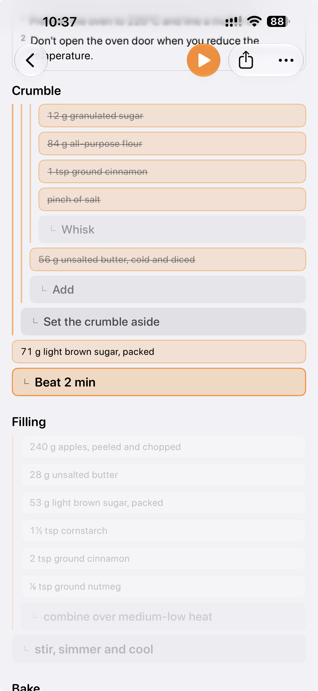
Know what goes where.
Ingredients flow into steps, and steps into the finished dish, so the whole recipe makes sense before you start.
Karoto turns your recipes into a clear, step-by-step tree. Every ingredient sits next to the step that uses it, so there’s nothing to hunt for halfway through.
Available on iOS, iPadOS & macOS
Recipe tree
A recipe you can understand at a glance, and follow without scrolling back.

Ingredients flow into steps, and steps into the finished dish, so the whole recipe makes sense before you start.
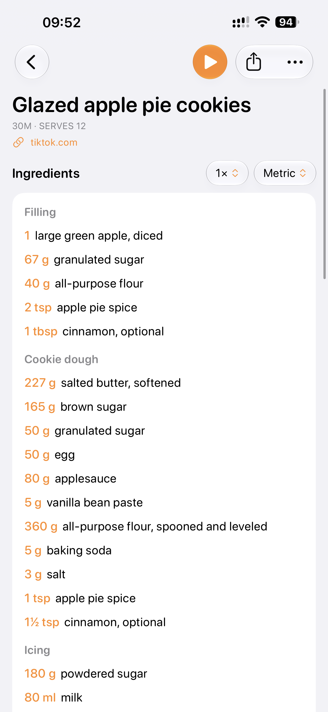
Dough and icing, cake and frosting, each with its own ingredients and steps, so a long recipe stays easy to follow.
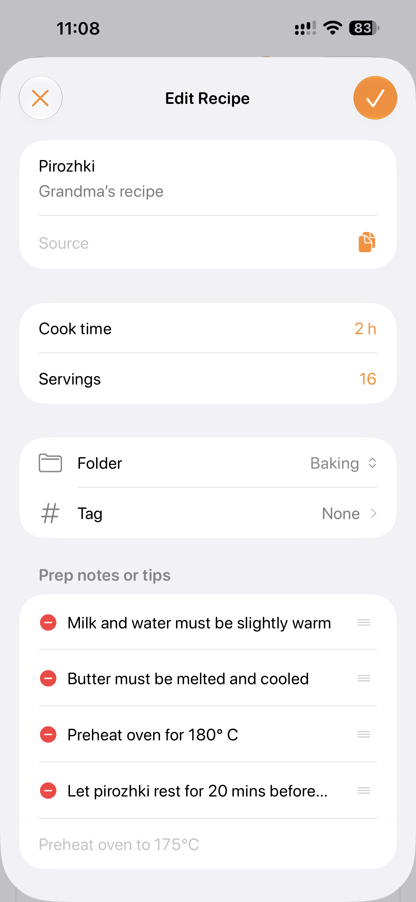
Karoto is ideal for anyone who loves creating recipes. Family favorites, experiments and your Sunday staple get the same clear tree as any imported recipe, ready to cook, scale and share.
Add recipes
A link, pasted text, a screenshot or a recipe of your own, and Karoto turns it into one you can follow.
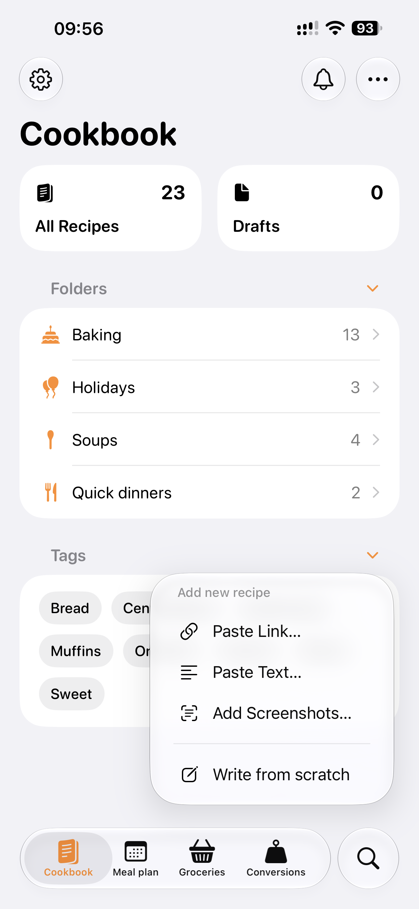
Add recipes from a website link, pasted text or a screenshot of a post or page, or write your own. Each one opens ready to check before it’s saved, and sharing from Safari brings a recipe in with one tap.
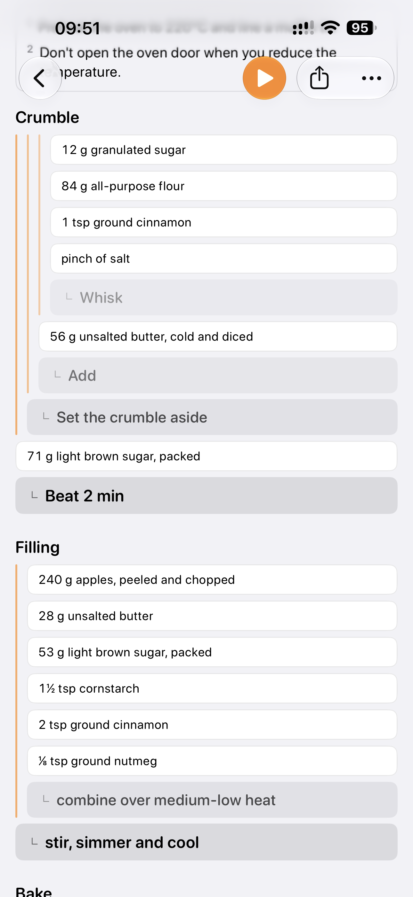
On supported devices, Apple Intelligence works out which ingredients belong to which step, so a flat list becomes a tree. Without it, Karoto matches each ingredient to the step that names it.
Cooking mode
Just what to do now, and only the ingredients it needs.
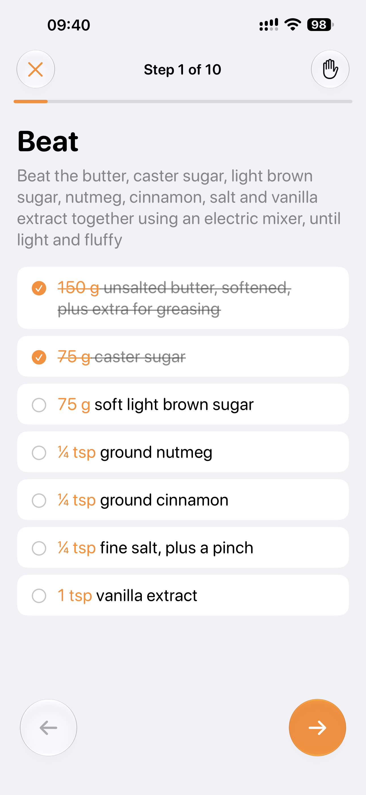
One step at a time, with just the ingredients it uses, and a screen that stays on while you cook.
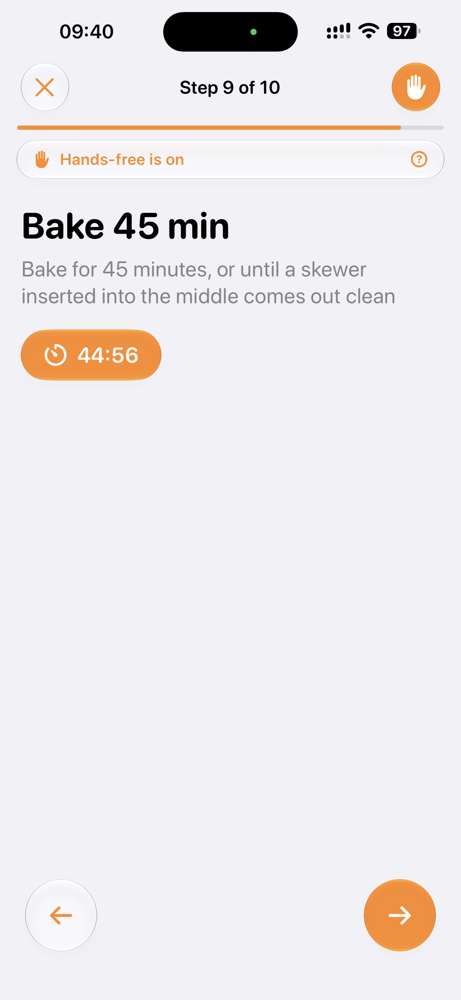
Use a hand or your eyes to move between steps, so flour, butter and sticky fingers stay off your phone.
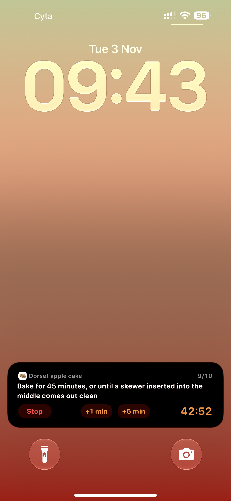
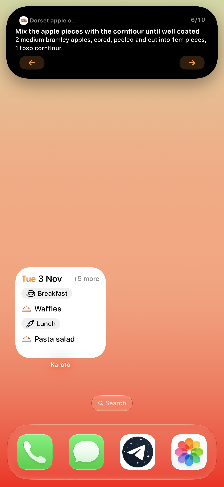
The current step and its timer stay on your Lock Screen and in the Dynamic Island, so you can leave the app and still know what’s next.
Meal plan
Breakfast, Lunch and Dinner each keep their own time, and Karoto sends a reminder when it’s time to start cooking, so the meal is ready when you planned.
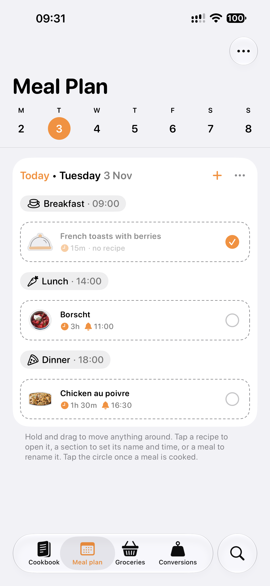
Drop recipes into sections, move them around as plans change, leave notes, and mark meals as cooked so you can see what you made.
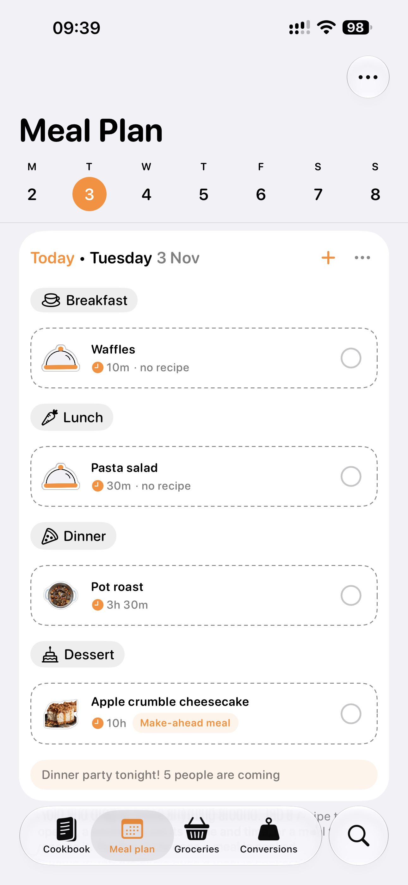
Plan a bowl of cereal, leftovers or a night out, and keep the recipes for the meals that need them.
Today’s meals kept on your Home Screen. It updates as you cook, and a finished meal steps aside for the next one.
And more
Breakfast, lunch and dinner, each with its own time. A notification when it’s time to start cooking, and a grocery list that fills itself.
Name a few ingredients, say eggs and milk, and Karoto lists the recipes that use both, or the closest matches when none does.
Ingredients from your recipes and meal plan are added up, grouped by aisle in one Reminders list, and ready on all your Apple devices.
Switch between metric and US units, choose from the different cup sizes, and look up common weights in the built-in tables.
Up to 5 people can share recipes, folders and meal plan, and each of them can add and edit, so dinner gets planned together.
Unfinished recipes are kept safe in Drafts, ready when you are, and they stay out of your meal plan and grocery list until they’re done.
A single recipe is easy to pass on as text or a link, and the whole cookbook comes with you as a .zip, whenever you want it.
Wherever you cook
Cook from your iPhone, edit recipes on your iPad, and plan your week on your Mac. Every device does it all, and everything stays in step through iCloud.
An app with no strings
No purchases, no subscriptions and nothing locked. Every feature is there from the first launch.
No account, no ads and no tracking. Karoto has no servers, your data lives on your device, and screenshots are read there too.
With iCloud sync on, recipes, photos and meal plans stay in step across your devices, stored in your iCloud and nowhere else.
Recipes are sorted into steps with Apple Intelligence on supported devices, either on your device or through Apple’s Private Cloud Compute. Learn more...
FAQ
No. Karoto works without an account. Everything is stored on your device, and sync across your devices is optional, through your own iCloud.
Yes, completely. There are no purchases, no subscriptions and nothing locked. Every feature is there from the first launch.
Yes. Your recipes, Meal Plan and Cook Mode all work without a connection. Adding a recipe from a link needs the internet, and iCloud sync catches up when you’re back online.
On your device. With iCloud sync on, they’re also kept in your own iCloud, so they stay in step across your devices. Karoto has no servers of its own.
iPhone, iPad and Mac, with iOS 26, iPadOS 26 or macOS 26 and later. Karoto speaks English and Russian.
Free download
A cookbook, meal planner and grocery list in one app. Forever free with no payments and subscriptions, ever.
Available on iOS, iPadOS & macOS